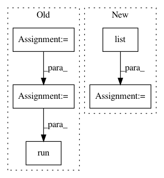

b32a4724dd2f8c97ff3b3813e5622d6bb6fb8f7a,dual_net.py,DualNetwork,run_many,#DualNetwork#Any#Any#,231
Before Change
return probabilities[0], value[0]
def run_many(self, positions, use_random_symmetry=True):
fts = functools.partial(features.extract_features, features=features.NEW_FEATURES)
processed = list(map(fts, positions))
if use_random_symmetry:
syms_used, processed = features.randomize_symmetries_feat(processed)
probabilities, value = self.session.run(
[self.policy_output, self.value_output],
feed_dict={self.x: processed,
self.train_mode: False})
if use_random_symmetry:
probabilities = features.invert_symmetries_pi(syms_used, probabilities)
return probabilities, value
After Change
return probs[0], values[0]
def run_many(self, positions, use_random_symmetry=True):
processed = list(map(features.extract_features, positions))
if use_random_symmetry:
syms_used, processed = symmetries.randomize_symmetries_feat(processed)
outputs = self.sess.run(self.inference_output,
feed_dict={self.inference_input["pos_tensor"]: processed})
probabilities, value = outputs["policy_output"], outputs["value_output"]
if use_random_symmetry:
probabilities = symmetries.invert_symmetries_pi(syms_used, probabilities)
return probabilities, value
In pattern: SUPERPATTERN
Frequency: 3
Non-data size: 5
Instances
Project Name: tensorflow/minigo
Commit Name: b32a4724dd2f8c97ff3b3813e5622d6bb6fb8f7a
Time: 2018-01-15
Author: brian.kihoon.lee@gmail.com
File Name: dual_net.py
Class Name: DualNetwork
Method Name: run_many
Project Name: OpenNMT/OpenNMT-tf
Commit Name: f210f5a82b4258925d298b5896d5157cdde333c2
Time: 2019-02-11
Author: guillaume.klein@systrangroup.com
File Name: opennmt/tests/data_test.py
Class Name: DataTest
Method Name: testRandomShard
Project Name: OpenNMT/OpenNMT-tf
Commit Name: f210f5a82b4258925d298b5896d5157cdde333c2
Time: 2019-02-11
Author: guillaume.klein@systrangroup.com
File Name: opennmt/tests/data_test.py
Class Name: DataTest
Method Name: testReorderInferDataset